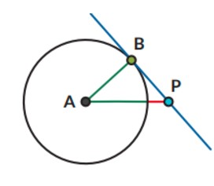

Di bawah ini merupakan gambar garis singgung dari titik P ke lingkaran A:
Garis singgung persekutuan luar
Garis singgung persekutuan adalah garis singgung yang merupakan garis singgung bagi dua lingkaran. Garis CD merupakan garis singgung persekutuan luar untuk lingkaran A dan lingkaran B.
Garis singgung persekutuan dalam
Selain garis singgung persekutuan luar, ada juga garis singgung persekutuan dalam. Garis EF merupakan garis singgung persekutuan dalam untuk lingkaran A dan lingkaran B.
contoh soal:
Jika jari-jari lingkaran A adalah 7 cm dan titik P berjarak 25 cm dari titik . Berapakah panjang garis singgung PB?
△ABP siku-siku di B. Berdasarkan teorema Pythagoras:
PB2 = PA2 - AB2
PB2 = 252 - 72
PB2 = 242
PB = 24 cm